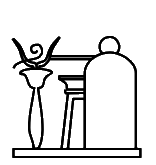
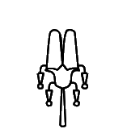
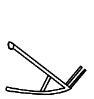
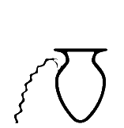

13C9D

13C9F
The glyphs of the extended list were automatically extracted from the official PDF code charts of Unicode 16. For the basic list, the glyphs are from the code charts of Unicode 5.2. Lines in blue starting with code point and kEH_Desc are descriptions copied verbatim from Unikemet.
|
13C9D
|
13C9F
|
U+13C9D kEH_Desc A falcon (G5), on top of a teardrop sized perch with the point down.
U+13C9F kEH_Desc A falcon (G5), on top of a long upside down cone.
This may be one of the cases where consistency between different fonts will be impossible to achieve and where it will be impossible for the encoders to know which code point to choose. The "teardrop sized perch with the point down" *is* an upside down cone. One shape is marginally thinner and longer than the other, that's all.

13CBE
|
U+13CBE kEH_Desc A falcon, seen from the side, one wing forward, horizontal, other wing forward, at a 45° downwards angle, one claw visible below the lower wing.
The "one wing forward" is not remotely "horizontal" in the glyph. If the glyph is accurate, I would just say "wings forward, one slanting up and the other slanting down", avoiding also mention of the exact angle. [I'm not sure the word "slanting" is the most fluent English word one could choose.]
|
13CD5
|

13CD6
|

13CD9
|
13CDA
|
U+13CD5 kEH_Desc A human headed bird.
U+13CD6 kEH_Desc A human headed bird, with a flagellum (S45) on its shoulder.
U+13CD9 kEH_Desc A human headed bird (G53A), wearing a headdress consisting of two feathers on top of the horns of a ram (S77).
U+13CDA kEH_Desc A human headed bird (G53A), wearing a headdress consisting of two feathers on top of the horns of a ram (S77), with a flagellum (S45) on its shoulder.
None of the descriptions of human-headed birds mention beards. If these are not expected to have beards, or if it doesn't matter, I would suggest omitting them from the glyphs.
The glyph of U+13CDA, unlike U+13CD9, seems to suggest uraei on the headdress. Are those real?
|
13CE9
|
13CEA
|

13CED
|
13CEE
|
U+13CE9 kEH_Desc Three heads and upper bodies of ducks protruding from a nest without internal detail.
U+13CEA kEH_Desc Three heads and upper bodies of ducks protruding from a nest with netting as internal detail.
U+13CED kEH_Desc Three heads of a pintail duck (Anas acuta) (H1), protruding from an oval pool or nest.
U+13CEE kEH_Desc Three heads of a pintail duck (Anas acuta) (H1), protruding from an oval pool or nest, with internal netting as detail.
These violate Point 5 of the Guidelines "Signs that exist with and without inner detailing will be included with the inner detailing".

13150 (5.2)
|
13CFC
|
U+13150 kEH_Desc A griffon vulture (Gyps fulvus).
U+13CFC kEH_Desc A griffon vulture (Gyps fulvus), without internal detail or visible wings, without a lappet.
Introduction of U+13CFC violates Point 5 of the Guidelines.
|
13D10
|
13D11
|
U+13D10 kEH_Desc A staff, with a straight shaft, topped with the head of a falcon, with the sun, encircled by a cobra (Naja haja), standing up, with expanded hood (Uraeus) (N6) on top of the head.
U+13D11 kEH_Desc A staff, with a straight shaft and forked end, topped with the head of a falcon, with the sun, encircled by a cobra (Naja haja), standing up, with expanded hood (Uraeus) (N6) on top of the head.
In the glyph of U+13D11, the cobra does *not* encircle the sun; it is just the I10 cobra. Cut-and-paste error from U+13D10?
|
13D45
|
U+13D45 kEH_Desc A Nile crocodile (Crocodylus niloticus), wearing a headdress consisting of two feathers on top of the horns of a ram, with a cobra (Naja haja), standing up, with expanded hood (Uraeus), with sun disks its head on either side of the feathers, orientated outwards.
It is impossible to make out the sun disks on the cobras in the code charts. What's the point of specifying details that are so small that they are lost with any normal resolution?
(The description is also ungrammatical.)

13D64
|

13192 (5.2)
|
U+13D64 kEH_Desc A horned desert viper (Cerastes cerastes) (I9), coming out of an open rectangle, with the top line shorter than the bottom line (I24); on top of legs in a walking posture, feet orientated towards the reading direction (D54).
U+13192 kEH_Desc A horned desert viper (Cerastes cerastes) (I9), coming out of an open rectangle, with the top line shorter than the bottom line.
In the glyph of U+13D64, the top and bottom lines have the same length. Copy-and-past error from U+13192 in the description? Or is the glyph wrong?
|
13D72
|
U+13D72 kEH_Desc A cobra in repose (Naja haja) (I10), written over the white crown (S1), with a sun disk (N5) written between the crown and the vertical section of the tail of the cobra.
In the glyph, the cobra is *under* the white crown, not *over*.
|
13D92
|
U+13D92 kEH_Desc A cobra (Naja haja), standing up, with expanded hood (Uraeus), with a coiled tail (I12), written over a sceptre with a straight shaft, a forked base, topped with the head of the Seth animal (S40), angling forwards, with a cartouche in a round form (V9) with the loop around the staff.
The mention of the forked base is strange, as the base is not visible.
|
13DA8
|
U+13DA8 kEH_Desc A cobra with the head of a falcon, with a feather (H6) on its head, vertically, with a coiled tail, consisting of four coils.
Font-technical issue at face of falcon, clockwise/counter-clockwise?

13DAB
|

13DAD
|

13DAE
|
U+13DAB kEH_Desc A cobra in repose (Naja haja), standing up.
U+13DAD kEH_Desc A cobra in repose (Naja haja), with its tail coiled up, in a single coil.
U+13DAE kEH_Desc A horned desert viper (Cerastes cerastes), with its tail coiled up in a single coil.
What is the difference between "standing up" and "its tail coiled up, in a single coil"? In the glyphs, it is just the height of the tail that differs between U+13DAB and U+13DAD, and U+13DAE actually appears to have a tail closer to U+13DAB than to U+13DAD.
Another example where consistency between fonts will be impossible to achieve, and the graphical distinctions that have been made seem inappropriately fine-grained for Unicode.
|
13DB1
|
13DB2
|
U+13DB1 kEH_Desc A horned viper (Cerastes cerastes) with a coiled tail, consisting of two coils that are lower than the head.
U+13DB2 kEH_Desc A horned viper (Cerastes cerastes) with a coiled tail, consisting of two coils that are of the same hight as the head.
If it is really necessary to distinguish these two (they are functionality identical and as close as say the hare from the flat hare in appearance), then "lower than" is insufficient to distinguish U+13DB1 from U+13DB2. In the glyph, the coils are about half the height of the head. If this is accurate, then I would write "about half the height" rather than "lower than".

13DB6
|
U+13DB6 kEH_Desc A snake, with a coiled tail, with it head in a hole.
In the glyph, the "hole" unmistakably looks like one end of the pt sign. Is that intentional? See:
https://thotsignlist.org/mysign?id=36
Here the shape in the normalized font looks like that in Unicode, but the image of the token more plausibly looks like the description, with a rounded "hole".

13DBB
|
13DBE
|
U+13DBB kEH_Desc A snake with a coiled tail, consisting of three coils, with a knife with a triangular blade and straight handle (T30A), written vertically on each coil, blade forwards.
U+13DBE kEH_Desc A snake with a coiled tail, consisting of three coils, head upward, with a knife with a triangular blade (T30A) written on each coil of the tail, at an forwards angle, blade down.
What is the difference that justifies the multiple code points for such similar graphical variants? The "head upward" ? Or the exact angle of the knifes? In fact the head in U+13DBE is less "upward" than in U+13DBB.
Once again I'm astonished that clearly distinct graphical variants among the basic list have been made Legacy, while almost indistinguishable variants were introduced as core signs.

13DD3
|
13DD5
|
U+13DD3 kEH_Desc A fish, with its tail orientated downwards.
U+13DD5 kEH_Desc A fish, with its tail orientated downwards, with two small fins on either side of its body.
I appreciate the fishes are difficult, because the graphical distinctions can be subtle and variable and often encoders need to rely more on function than on appearance, but even so, the above is a problem because the description of U+13DD3 subsumes that of U+13DD5 and the functions are identical. If U+13DD5 is characterized by particular fins, then U+13DD3 deserves to be characterized by particular (other) fins as well.

13DD7
|

13DD8
|
U+13DD7 kEH_Desc A fish, with its tail orientated downwards (K4A), on top of legs in a walking posture, feet orientated towards the reading direction (D54).
U+13DD8 kEH_Desc A fish, with its tail orientated downwards, with two small fins on either side of its body (K4B), on top of legs in a walking posture, feet orientated towards the reading direction (D54).
As above. One description subsumes the other. The functions are identical.
|
131A3 (5.2)
|

13DE1
|

13DE2
|
U+131A3 kEH_Desc A dung beetle, scarab (scarabaeus sacer).
U+13DE1 kEH_Desc A dung beetle, scarab (scarabaeus sacer), with multiple vertical lines over the carapace.
U+13DE2 kEH_Desc A dung beetle, scarab (scarabaeus sacer), with the red crown (S3) on its head.
If the "multiple vertical lines" are sufficient reason to distinguish U+13DE1 from U+131A3, then the "multiple vertical lines" in U+13DE2 deserve to be mentioned as well. (That is provided the "multiple vertical lines" in the glyph of U+13DE2 are real.)

13DE7
|
U+13DE7 kEH_Desc A dung beetle, scarab (scarabaeus sacer) (L1), with outstretched wings, which are curved upwards, connecting, making a circular form.
In the glyph, the wings are not remotely connected and I would not even say the wings make a circular form. I think I know what is meant by "circular form", e.g. the winged scarab pectoral of Tutankhamun has a full circular form with the sun disk in between at the top (and a nb sign at the bottom). U+13DE7 is not that.

13E09
|

13E0A
|
U+13E09 kEH_Desc A dom palm tree (Hyphaene thebaica) with sprouts a the bottom, with dom palm dates haning from the top.
U+13E0A kEH_Desc A dom palm tree (Hyphaene thebaica) with sprouts a the bottom, with two trunks.
Correct "at the bottom".
The glyph of U+13E0A looks quite strange. Could further guidance be provided how to interpret the different lines in the given glyph? Could one consider normalizing the glyph to help the user interpret what is drawn?

13E20
|
13E27
|
U+13E20 kEH_Desc A palm branch, stripped of leaves and notched with a sharp notch (M4B), on top of a stool made of reed matting (Q3).
U+13E27 kEH_Desc A palm branch, stripped of leaves and notched with a sharp notch (M4B), on top of a stool made of reed matting, with internal detail (HGx Q3A).
Overtly violates Point 5 of the Guidelines "Signs that exist with and without inner detailing will be included with the inner detailing".
|
13E41
|
13E42
|
U+13E41 kEH_Desc A lotus flower with internal detail, facing upwards, with a long stalk.
U+13E42 kEH_Desc A lotus flower with internal detail, facing upwards, with a long stalk.
Apart from the violation of Point 5 of the Guidelines, the description of U+13E42 is inaccurate. At best, correct U+13E42 to "without".

13E44
|

13E47
|
U+13E44 kEH_Desc A lotus flower with internal detail, facing forwards, with a long stalk, folded under itself.
U+13E47 kEH_Desc A lotus flower with a extended central point/a papyrus flower, facing forwards, with a long stalk, folded under itself.
I don't see how anyone can possible justify having the second next to the first. For similar cases of trivial graphical variants in the basic list, there was apparently a decision to make one of them Legacy. I see no consistency. The two shapes are functionally equivalent.
|
13E5E
|

13376 (5.2)
|
U+13E5E kEH_Desc A leaf, stem and root of a lotus plant, with the stem before the leaf bend forwards, with the root resembling a cartouche in a round form (V9), with two angled strokes on either side of the stem.
U+13376 kEH_Desc A cartouche in a round form.
The way the root of U+13E5E is drawn does not exactly suggest V9 (U+13376).
|
13E82
|
13E81
|
U+13E82 kEH_Desc A flower with a long stem, making a curve turning the flower upside down, between two stems of papyrus with a bud (M13) on top of a circle.
U+13E81 kEH_Desc A clump of three papyrus flowers, with the flowers at the side orientated to the sides, with an upwards bud at either side of the group of three flowers; on a base.
Presumably, a "bud" looks different from a "flower". Yet the three things in the glyph of U+13E82 look identical. My hunch is that the two things on either side should look like the buds in U+13E81.

13E8A
|
U+13E8A kEH_Desc A pool or strip of land with three lotus buds, consisting of three vertical buds.
The description seems a bit longer than necessary, unless I misinterpret it. How about just "A pool or strip of land with three vertical buds."?
I see three ticks on top of the land, but I don't think these are important enough to mention.
|
13E9C
|
Font-technical problem (anti-)clockwise?
|
13EAA
|
U+13EAA kEH_Desc A bundle of flax stems, bound together with string near the top of the bundle, with the bolls visible on the top.
Apparently "bolls" are "rounded seed capsules of plants such as cotton or flax". What is on top in the glyph is square, not rounded. A redraw needed?
|
13EAB
|

131E7 (5.2)
|
U+13EAB kEH_Desc A bundle of flax, bound together with string near the bottom of the bundle, without internal detail.
U+131E7 kEH_Desc A bundle of flax stems, bound together with string near the bottom of the bundle.
The "near the bottom of the bundle" of U+13EAB doesn't seem to match the glyph.
Also, does adding U+13EAB next to U+131E7 not violate Point 5 of the Guidelines "Signs that exist with and without inner detailing will be included with the inner detailing"?
|
13EB2
|
U+13EB2 kEH_Desc A basket with two roes of four pieces of grain or fruit.
If it is really necessary to have a sign specifically for 2*4 pieces, then at least make the glyph consistent. There are 9 pieces in the glyph.
My preference would be to underspecify the number of pieces. If the number of rows is significant, one can mention that, e.g.:
"A basket with two rows [or layers] of pieces of grain or fruit."

13EB5
|
13EB4
|
U+13EB5 kEH_Desc A vertical bundle of reeds, with a sloped top towards the back; tied together, with the ties at the back, with the tops of the reeds visible.
U+13EB4 kEH_Desc A vertical bundle of reeds, with a sloped top towards the back; tied together, with the ties at the back.
Adding U+13EB5 next to U+13EB4 seems hardly appropriate for Unicode. It appears to be overtly paleographic, and such details are lost in ordinary font sizes and coarse fonts may omit these details anyway.
Also related in spirit to Point 5 of the Guidelines.

13ECF
|
U+13ECF kEH_Desc The sky, with ribbled lines of water coming from it.
Correct "ribbled" to "rippled"?

13EEC
|
U+13EEC kEH_Desc A sun-disk with wings at a 90° angle, with an uraeus coming from the sun-disk, filling the space between the two wings.
Hm, I would not say "filling the space", assuming the glyph is accurate. If the description is accurate, then the uraeus should be bigger and moved closer into the bounding box of the two wings. If the glyph is accurate, then how about "in the far corner of the space between the two wings"?
|
13EF8
|
U+13EF8 kEH_Desc Three half-circles of dots written on top of each other.
Ok, but it is difficult to make out the smallest of the three circles. Perhaps a slight improvement to the glyph might be made to bring out all three circles clearly.

13F03
|
U+13F03 kEH_Desc A parcel of land with irrigation ditches, consisiting of three horizontal lines.
In the glyph, there are *four* horizontal lines, not three. Now, I'm not saying that counting lines is a good thing. My suggestion in keeping with other descriptions in this family of signs would be in the first instance (but see below):
"A parcel of land with irrigation ditches, at right angles."

13F05
|

13F06
|
U+13F05 kEH_Desc A parcel of land with irrigation ditches, vertical lines at an angle, extending beyond the top and bottom horizontal line.
U+13F06 kEH_Desc A parcel of land with irrigation ditches, consisting of three by three lines, extending beyond each other.
In both cases, the lines "extend beyond each other". If the glyphs are accurate, then a different way should be found to phrase the difference between U+13F05 and U+13F06 (and preferably not by counting lines). Is it the orientation of the angles, sloping "forward" or sloping "backward"?
But then the question is why the mirroring control could not be used.
|
13F0A
|
U+13F0A kEH_Desc A parcel of land with irrigation ditches, consisiting of four horizontal lines of blocks.
In keeping with the above, I would say here for U+13F0A:
"A parcel of land with irrigation ditches, at right angles."
and then the description of U+13F03 could be expanded to be distinct from this:
"A parcel of land with irrigation ditches, at right angles, the horizontal lines extending beyond the leftmost and rightmost vertical lines."

13F11
|
U+13F11 kEH_Desc A horned desert viper (Cerastes cerastes) (I9), written over a tree (M1), in front of hind-quarters of a seated lion or leopard (F22); on top of a standard used for carrying religious symbols (R12), written on top of a parcel of land with irrigation ditches (N24).
In the glyph the viper is *under* the tree.
|
13F93
|
U+13F93 kEH_Desc A gateway, with the bottom fully closed, with internal detail.
There is no attempt to specify what the "internal details" consist of. I can understand why, as it would be pretty hard to specify what that even means. Should any strokes or texture, no matter how insignificant, be seen as "internal detail"? This supports my view that there should not be multiple code points for the same sign with and without "internal details". Point 5 of the Guidelines actually suggests the same.

13F98
|

13F99
|
U+13F98 kEH_Desc A plan and façade of a hall, with a cornice with four Uraei on top, orientated forwards.
U+13F99 kEH_Desc A thin plan and façade of a hall, with a cornice with four Uraei on top, orientated forwards.
The two listed functions happen to be different, but unless the two functions are actually tied to the width difference, then this is not a meaningful distinction for Unicode, and consistency between fonts will be impossible to achieve.
In the "database" I see a comment "I am not sure the variation between the O16 variants (broad vs less broad) is meaninful enough to include in Unicode", but also "Seems too numerous to leave out". I understand the first, but the second is moot. I'm sure that you will be able to find lots of occurrences of the flat N025A next to the tall N25 (the "foreign land" sign) in encodings, but that doesn't mean that N25 and N025A have independent character identities. If you believe that N025A (U+1320A) was made Legacy for good reasons (and I would agree), then why should U+13F98 and U+13F99 both exist as core signs in Unicode?

13FA1
|

13FA2
|
U+13FA1 kEH_Desc A façade of a shrine with a flat roof, with oblique sides, with a large doorway, with a pole in front, with a horizontal line over the roof, connected to the roof with three vertical lines.
U+13FA2 kEH_Desc A façade of a shrine with a flat roof, with oblique sides, with a large doorway, with a pole in front, with a horizontal line over the roof, connected to the roof with two vertical lines.
This distinction is so silly that even the number of vertical lines in the glyph of U+13FA1 is wrong (it is four in the glyph, not three).
Understandably, in the Database we find:
"I could not verify any token with an glyph, and for Unicode only F2ED7 (O329A) OR F2EDA (O329) should be added, not both."
Was it a mistake then that both U+13FA1 and U+13FA2 ended up being added to Unicode as core signs?
|

13FA7
|
U+13FA7 kEH_Desc The emblem erected outside the temple of Min, resembling the horns of a bovid (F13) on top of a stem of papyrus with a bud (M13), with a coil of rope (V1) between the horns, connected to a cone, with a spike on top, from which a shrine with a flat roof comes forth.
I would make the spike more spiky. Now it just looks like a circle.

13FD2
|
U+13FD2 kEH_Desc A double pavilion, with columns topped with a triangle, with two carrying chairs (Q2), facing away from one another; on top of an alabaster basin with a diamond shaped inner marking (W3).
I don't see triangles. Redraw needed? What exactly is this supposed to look like? What is the roof like?

13FD6
|
13FC1
|
U+13FD6 kEH_Desc A booth with a round roof, supported by two columns resembling a stem of papyrus with a bud (M13), with an abacus; on top of a base (O210A).
U+13FC1 kEH_Desc A carrying chair (Q2), written inside a booth or pavillion, with two columns resembing a stem of papyrus with a bud (M13), with a curved roof.
The description of U+13FD6 is not at all what the glyph shows. The glyph has the sky sign where I would expect two abaci (one abacus on top of each column, if I understand what an abacus is). Also, there is not one base, but rather two bases, one under each column. How I interpret the description of U+13FD6 is as U+13FC1 but without the carrying chair.
|
13FD7
|
U+13FD7 kEH_Desc A ram (Ovis longipes palaeo-aegyptiacus), standing, without a beard (E11), with a round vessel with an upstanding rim (W24) above its back; written inside a booth consisiting of the sky (N1), supported by two columns resembling a stem of papyrus with a bud (M13), with an abacus; on top of a base (O210A); on a broad base.
I would simplify "on top of a base (O210A); on a broad base" to "on top of a broad base (O210A)". Unless I misunderstand what is meant.
The abaci are not shown in the glyph. (Why bother mentioning the abaci in the first place? It is a tiny detail and likely not essential to the character identity.)

13FEB
|
U+13FEB kEH_Desc A column resembling a stem of papyrus with a bud (M13), on a base, with a
Truncated Unikemet description.
|
13FF2
|
U+13FF2 kEH_Desc A door-bolt (O34), written over two human feet and lower legs (D58), arranged horizontally.
The Database says "Needs to be atomic due to the position of the O34."
Nonsense, because (1) whether O34 is 1pt higher or lower relative to the legs is paleography, and (2) it is the font's responsibility to arrange signs in a suitable manner. This exact group was in fact listed in:
https://nederhof.github.io/hierojax/ligaturelist.html
And here linked to insertions:
https://nederhof.github.io/hierojax/insertionlist.html
If we are starting to encode groups atomically because we wish to fine-tune their exact positioning, then why did we bother with controls in the first place? Controls by definition abstract away from exact positionings. The advantages of controls are normalization and abstraction. Are we willing to give up on these advantages now? It makes no sense to on the one hand deprecate clearly distinct graphical variants in the basic list (making them Legacy), motivated by the advantages of normalization and abstraction, while on the other hand introducing new atomic encodings of compositional groups, moving away from normalization.
And if you accept that Unicode needs to encode fine-tuned positioning, then the one or two ligatures that have slipped through in the extended Unicode set will not suffice. You will need to start introducing possibly hundreds of additional code points of compositional groups. I don't think anyone would be happy with that either.
|
13FFF
|

1329A (5.2)
|
U+13FFF kEH_Desc A heap of grain on a raised floor, without internal detail.
U+1329A kEH_Desc A heap of grain on a raised floor.
Introduction of U+13FFF violates Point 5 of the Guidelines:
"Signs that exist with and without inner detailing will be included with the inner detailing".
|
14006
|

14007
|
U+14006 kEH_Desc An ornamental chevaux de frise on top of walls, with a circle dividing the top and base, with the top spreading like a flower.
U+14007 kEH_Desc An ornamental chevaux de frise on top of walls, with a circle dividing the top and base, with the top spreading like a flower, with a circle on top of the tip.
Hm, I think I understand what is meant (something in the vein of "the kind of chevaux de frise that typically occurs on top of a wall"), but there are no walls in the glyphs. I would just omit "on top of walls".

1400C
|
U+1400C kEH_Desc The emblem erected outside the temple of Min, resembling the horns of a bovid (F13) on top of a stem of papyrus with a bud (M13), with a sun disk (N5) between the horns, connected with a line to a cone with a spike on top.
I would make the spike more spiky because currently it doesn't look like a spike.
|
13294 (5.2)
|

14010
|

14011
|

14012
|
U+13294 kEH_Desc A plan of a prehistoric building at the town of Nekhen, written as an oval, without the angled lines touching the oval.
U+14010 kEH_Desc A plan of a prehistoric building at the town of Nekhen, written as an oval, with the angled lines touching the oval.
U+14011 kEH_Desc A plan of a prehistoric building at the town of Nekhen, written as an oval, with multiple angled lines used as internal decoration.
U+14012 kEH_Desc A plan of a prehistoric building at the town of Nekhen, written as an oval, with four angled lines, touching the oval.
If it is really necessary to distinguish these, then in U+13294 and U+14010, at least specify *two* angled lines. Perhaps for U+14011 one could replace "multiple" by "more than 4".
|
14027
|

14028
|
U+14027 kEH_Desc A boat/ship, resembling a crescent moon, on top of a rectangle of water, with an oar/rudder at the back.
U+14028 kEH_Desc A boat/ship, resembling a crescent moon, on top of a rectangle of water, with an oar/rudder at the back.
Why is this not the same sign (with two different but related functions)?

14032
|
U+14032 kEH_Desc A boat/ship with an inward curved prow and stern, on top of a rectangle representing water, with an oar/rudder at the back.
In the glyph there are *two* oars/rudders at the back.
|
14042
|

14050
|
U+14042 kEH_Desc A boat/ship, resembling a crescent moon, on top of a rectangle of water, with a sail on top of a rectangle, with an oar/rudder at the back.
U+14050 kEH_Desc A boat/ship with a prow and stern curved inwards, ending with a flower-like shape, with a circle inside the boat/ship.
The description of U+14042 is not nearly as detailed as some others. For one thing, it doesn't mention the shapes at the ends of the "crescent moon", which are not like other boats, apart from U+14050 perhaps, which has "prow and stern curved inwards".
Another thing is that the "back" is apparently at the left, unlike other boats where the back is at the right. Is that intentional?

14048
|
U+14048 kEH_Desc A boat/ship, resembling a crescent moon, with the head of a falcon, with the sun, encircled by a cobra (Naja haja), standing up, with expanded hood (Uraeus) (N6) on top of the head, on top of the prow and stern, on top of a rectangle of water, with a shrine, seen from the side, with a downwards sloping roof, with an uraeus at the front of the roof (O18A) inside the boat/ship, with an oar/rudder at the back.
There appear to be *two* oars/rudders in the glyph.
|
1404D
|

13933
|
U+1404D kEH_Desc A boat/ship, resembling a crescent moon, with the head of a woman, with a headdress of bovine horns with a sun disk (F102), on top of the prow and stern, on top of a rectangle resembling water, with a façade of a shrine with a flat roof, with oblique sides, with a large doorway (O21B) inside the boat/ship.
U+13933 kEH_Desc The head of a goddess, seen in profile, wearing a headdress of bovine horns with a sun disk (F102), wearing the vulture headdress, on top of a staff.
I don't think there is a doorway in the glyph of U+1404D.
Also, in the vague image I seem to make out the vulture headdress underneath the bovine horns headdress, just like U+13933. Is that real?
|
14068
|

1406B
|

1406C
|
U+14068 kEH_Desc A moon-sickle shaped boat with an higher prow than stern, with the head of an antilope (F81) on top of the prow, on top of a sledge with two vertical internal strokes, with a falcon (G5) staninding on top of a rectangular shrine, inside the boat/ship, with an oar/rudder at the back.
U+1406B kEH_Desc A moon-sickle shaped boat with an higher stern than prow, with the head of an antilope (F81) on top of the stern, on top of a rectangle representing water, with a tall shrine with a round roof, with two vertical lines enclosing the top, on a base, without internal decoration (GID O20D), written inisde the boat/ship.
U+1406C kEH_Desc A moon-sickle shaped boat with an higher stern than prow, with the head of an antilope (F81) on top of the stern, with lines crossing the prow, on top of a sledge with two vertical internal strokes, with a tall shrine with a round roof, with two vertical lines enclosing the top, on a base, without internal decoration (GID O20D), written inisde the boat/ship.
There is "with an oar/rudder at the back" for U+14068, there is "with lines crossing the prow" for U+1406C, and nothing comparable for U+1406B. Yet the shape looks identical in all three glyphs. For consistency, can we just have "with an oar/rudder at the back/front" for all these cases?

14070
|
14075
|
U+14070 kEH_Desc A moon-sickle shaped boat with an higher prow than stern, with a rudder, with the head of an antilope (F81) on top of the prow, facing inwards, with a downwards line with multiple horizontal lines written over it coming from the head, on top of a sledge, with a falcon (G5), standing on top of a rectangular shrine, with vertical lines as internal detail, written inside the boat/ship.
U+14075 kEH_Desc A moon-sickle shaped boat with an higher prow than stern, with the head of an antilope (F81) on top of the prow, with a downwards line with multiple horizontal lines written over it coming from the head, on top of a sledge represented by four vertical lines between two horizontal lines, with a falcon with spread wings, on top of a low cone shape inside the boat/ship, embracing the cone with its wings, with an oar/rudder at the back.
I don't see the "multiple horizontal lines written over it" in the glyph of U+14070. Presumably, what was meant is similar to U+14075.
I also think that the internal lines of the shrine and the lines of the sledge should not have been drawn as one and running over the boat/ship, if I understand the description correctly.

14074
|
U+14074 kEH_Desc A moon-sickle shaped boat with an higher prow than stern, with the head of an antilope (F81) on top of the prow, on top of a sledge represented by four vertical lines between two horizontal lines, with a falcon with spread wings, on top of a low cone shape inside the boat/ship, embracing the cone with its wings, with an oar/rudder at the back.
The shape of the sledge as described ("four vertical lines between two horizontal lines") does not at all correspond to the glyph.

14076
|
14077
|
U+14076 kEH_Desc A fishersman's boat, with a net inside the boat, with internal detail.
U+14077 kEH_Desc A fishersman's boat, with a net inside the boat, without internal detail.
It is hard to imagine a more blatant, more literal violation of Point 5 of the Guidelines:
"Signs that exist with and without inner detailing will be included with the inner detailing"
Most of the Guidelines use weasel words that allow unlimited proliferation of variant shapes despite giving the impression of wanting to keep the number of variant shapes within reasonable bounds. If even one of the clearer guidelines is so flagrantly broken, then what is the point of having the guidelines in the first place?

1407A
|
U+1407A kEH_Desc A boat/ship, on top of a rectangle representing water, with a horizontal rectangle inside the ship with vertical lines as internal decoration, with three vertical poles on top of the rectangle, with a line running from the top of the middle pole to the front and stern, forming a triangular shape, with an oar/rudder at the back.
The glyph suggests *two* oars/rudders.
I would not call the mentioned shape in the glyph a "horizontal rectangle". A rectangle consists of straight lines, while the shape is prominently curved. Perhaps say "flat shape inside between prow and stern with vertical lines as internal decoration"?
|
1407C
|
U+1407C kEH_Desc A rectangular sail, with the mast over the sail, with two loops of rope coming from the lower beam of the sail, looping over the mast.
In the glyph, I don't really see two loops coming from the lower beam of the sail, more like one and half loops. One of the loops ends at the mast, which does not seem quite consistent with the description. Is it supposed to be drawn as in the glyph?

14084
|
14085
|
U+14084 kEH_Desc A sail, with a point at the bottom, angling backwards, with a distinct beam at the top, with a mast in front of the sail.
U+14085 kEH_Desc A sail, with a point at the bottom, angling backwards, with a mast in front of the sail.
I suspect "point" is a dutchism. The shape at the bottom right I would call a "corner", not a "point".
|
14086
|
U+14086 kEH_Desc A rectangular sail, with the mast over the sail, with a cross-beam over the sail, with rigging coming from the top of the sail to the mast.
I see no "cross-beam over the sail" in the glyph. I think I see a cross-beam over the mast, *below* the sail. If the cross-beam is over the sail as in the description, what exactly is this supposed to look like?

14088
|
U+14088 kEH_Desc A sail, with a point at the bottom, angling backwards, with a distinct beam at the top, with a mast in front of the sail, with a cross-beam over the mast, with rigging coming from the top of the sail to the mast.
Hm, here I don't see a "point" (corner), but rather a short "distinct" beam at the bottom of the sail extending to the right, and a sail between the two "distinct" beams.

14089
|
U+14089 kEH_Desc A sail, with a point at the bottom, angling forwards, with a distinct beam at the top, with a mast in front of the sail, with a cross-beam over the mast.
Correct "point" to "corner".

1408B
|
U+1408B kEH_Desc A mast of a ship, with two prongs, with filling between the prongs.
"filling"? If this is what is meant, I would say something like "without depicting the space between the prongs". Unless "filling" is sailor's jargon for something specific.
|
140F4
|
U+140F4 kEH_Desc A censer for fumigation, written vertically, with a triangular shape at the top and the bottom.
I don't think the shapes in the glyph can be described as triangular. One end is ever so slightly wider than the other end.
|
14109
|
1410A
|

1410B
|
1410C
|

1410D
|

14110
|
U+14109 kEH_Desc A cloth wound on a pole, an emblem of divinity (R8), written over top of a butchers block, with the pole at the bottom of the block, at the back of a rectangular base, with a feather (H6), angled forwards on the tip of the base.
U+1410A kEH_Desc A cloth wound on a pole, an emblem of divinity (R8), written over top of a butchers block, with the pole at the bottom of the block, on top of a rectangular base, with a feather (H6), angled forwards on the tip of the base and a sandy hill slope (N29) behind the butchers block.
U+1410B kEH_Desc A cloth wound on a pole, an emblem of divinity (R8), written between a sandy hill slope (N29) and a butchers block.
U+1410C kEH_Desc A cloth wound on a pole, an emblem of divinity (R8), written between a butchers block and a sandy hill slope (N29), with a feather (H6), angled forwards at the front tip of the butchers block.
U+1410D kEH_Desc A cloth wound on a pole, an emblem of divinity (R8), written between a butchers block and a sandy hill slope (N29), with a feather (H6) on the butchers block and hill.
U+14110 kEH_Desc A feather (H6), angled forwards on top of a butchers block, on the front of a base, with a cloth wound on a pole, an emblem of divinity (R8) at the back of the base, with a half round loaf of bread (X1), above the hill country over the edge of the cultivated areas (N25), written between the butchers block and the emblem of divinity.
In U+1410B, U+1410C, U+1410D the mentioned things are connected by a line at the bottom. The line is thin in U+1410C while it is thick and prominent in U+1410B and U+1410D. By all reasonable measures, the thickness should not matter as to the identity of the sign. Even if the line is drawn as in U+1410A, it is still just a line. I doubt there are any good reasons for talking about "base" in U+14109 and U+1410A while not even mentioning the connecting line in U+1410B, U+1410C, U+1410D.
The description of U+14110 does mention "base", while the glyph has just a thick line, just like U+1410B and U+1410D.
My proposal would be to have "on a base" (not "a rectangular base") for all such signs for consistency.
|
1412D
|
U+1412D kEH_Desc A spear made into a standard, resembling a fire-drill in a piece of wood (U28), with a loop over the standard (Jsesh R15A), on top of the hill country over the edge of the cultivated areas (N25).
In the glyph, there are two dots on either side of the fire-drill. Are those supposed to be there?
|

1413E
|
U+1413E kEH_Desc A standard resembling a lotus flower with two plumes on top (R16C), with a counterweight of a necklace (S18A), hanging down from either side of the plumes and from the top of the standard.
Strictly speaking, in the glyph the lower two counterweights are hanging down from the lotus flower, not from the top of the standard.
|
14147
|
U+14147 kEH_Desc Two bones of a fossil squid (belemnite) (R22), on top of a standard used for carrying religious symbols (R12).
Minor matter but the black blob on the left seems uncharacteristic. May be clockwise / anti-clockwise font-technical issue of an inner curve.
|
14153
|

132D3 (5.2)
|
U+14153 kEH_Desc The white crown (S1), on top of a plan of a crossroads in a village (O49).
U+132D3 kEH_Desc The white crown (S1), on top of a plan of a crossroads in a village (O49).
If you think you can justify having 2 codepoints for these trivial graphical variants, then at the very least you need to have two distinct descriptions.

14157
|

132D8 (5.2)
|
U+14157 kEH_Desc The red crown (S3), on top of a plan of a crossroads in a village (O49).
U+132D8 kEH_Desc The red crown (S3), on top of a plan of a crossroads in a village (O49).
As above.
|
1416B
|
U+1416B kEH_Desc A crown, consisting on three horizontally arranged Atef crowns with a round bulb at the top, and the sun-disk at the base, on top of the horns of a ram, with an uraeus, with a sun disk on the head, facing outwards, at either side of the crown, with two ureai hanging downwards from the horns at either side.
I cannot match this to the glyph at all. Where is the "an uraeus, with a sun disk on the head"?
|
1416C
|
U+1416C kEH_Desc A crown, consisting on three horizontally arranged Atef crowns with a round bulb at the top, and the sun-disk at the base, on top of the horns of a ram, with an uraeus, with a sun disk on the head, facing outwards, at either side of the crown.
I don't see a sun disk on either uraeus. (Not that I think one should distinguish signs in Unicode on the basis of such tiny details.)
|
14179
|
U+14179 kEH_Desc A headdress consisting of two feathers on top of the horns of a ram, with a cobra (Naja haja), standing up, with expanded hood (Uraeus), with sun disks its head on either side of the feathers, orientated outwards.
Correct "with sun disks its head" to "with a sun disk on its head".

1418E
|
U+1418E kEH_Desc A necklace, consisting of a deep loop with three horizontal lines over it, with the capital of a column, in the form of the face of a human female, with hair in two curling sidelocks, with the ears of a bovid (O215) at the bottom of the loop, connected with a rectangle to the lowest horizontal line; with ornamental terminals resembling the same capital (O215), with outwards and downwards curving strings with flower-like end-pieces coming from the terminals.
Huh? I see nothing remotely like the description.

141AF
|

132EF (5.2)
|
U+141AF kEH_Desc A kilt or apron, with the side sections forming a sickle shape.
U+132EF kEH_Desc A kilt or apron.
How is there a sickle shape? To me, U+132EF and U+141AF look identical except that one is slightly wider than the other, which is generally not a good enough reason to introduce multiple code points.
The Guidelines have under point 2:
"Chubby or slender signs are part of this continuum and will not be differentiated."
This seems to suggest that U+141AF should not have existed next to U+132EF.

141BF
|

141C0
|
U+141BF kEH_Desc A rectangular piece of cloth, with sloping fringes on its front short side, with a cross shape as internal decoration.
U+141C0 kEH_Desc A square piece of cloth, with long sloping fringes on its front short side, with a cross shape as internal decoration.
A square is a special case of a rectangle; just saying. The fringes are comparably long, drawn slightly differently but so what? It doesn't seem appropriate to me that such shapes would be distinguished in Unicode (cf. again the Guidelines).

141D5
|
141D6
|
U+141D5 kEH_Desc A sceptre with a straight shaft, a forked base, topped with the head of the Seth animal (S40), under a crescent moon (N11) shape topped with a feather (H6).
U+141D6 kEH_Desc A sceptre with a straight shaft, a forked base, topped with the head of the Seth animal (S40), under a crescent moon (N11) shape topped with a feather (H6), written on top of a standard used for the carrying of religious symbols with the vertical stick at the far side (R92A).
If the circle section is to represent a crescent moon, then the glyph doesn't do a very good of representing this, i.e. it is nothing like N11 as it occurs in most fonts.
|
141D7
|
U+141D7 kEH_Desc A sceptre with a straight shaft, a forked base, topped with the head of the Seth animal (S40), under a double crescent moon (N11), arranged vertically, topped with a feather (H6), written on top of a standard used for the carrying of religious symbols (R12).
What is a double crescent moon supposed to look like? Just two circle sections like currently in the glyph?

14214
|

14216
|
U+14214 kEH_Desc A shield with a rounded top, with two arrows crossed over it, fletching upwards (T62), on top of a standard used for carrying religious symbols, with a loop under the horizontal beam, running over the vertical pole (R12A).
U+14216 kEH_Desc A shield with a rounded top, with two arrows crossed over it, fletching upwards (T62), on top of a standard used for carrying religious symbols, with a short vertical pole, with a loop under the horizontal beam, running over the vertical pole (R56).
I see no "loop" in U+14214. If a loop is added, then U+14214 and U+14216 become basically the same shape. Not sure how the diagonal part of the standard fits in.
|
1425E
|
U+1425E kEH_Desc A long oval net, resembling a loop with vertical lines inside it, with ties at the front which curve outwards and backwards.
"vertical lines"? I rather see curves, not vertical lines. A matter of loose use of words, or rather an image that is incorrect?
|
1429D
|

1429C
|
U+1429D kEH_Desc A plough, with a cross-bar and two vertical lines on the long beam, with the long beam curving upwards at the front.
U+1429C kEH_Desc A plough, with a cross-bar and two vertical lines on the long beam, without a circle at the front of the long beam.
"At the front" in the description of U+1429D becomes confusing because the sign is mirrored relative to say U+1429C. Elsewhere in descriptions I have seen use of "left" and "right". I realise the downside of left/right is that strictly speaking this becomes incorrect for right-to-left running text, but the left/right terminology tends to be less ambiguous than front/back when describing signs in the sign list.
|
142AE
|

13349 (5.2)
|
U+142AE kEH_Desc An adze, with an attached blade at the front, in a piece of wood, with the end handle below the wood.
U+13349 kEH_Desc An adze, with an attached blade at the front (U19A), in a piece of wood.
In the Unicode 5.2 code charts (not the current code charts), the handle of U+13349 was already a little below the wood. Either way, distinguishing these two variants on the basis of how many pixels the handle is below the wood is entirely inappropriate for Unicode.
In the Database there is a comment:
"Variation seems meaningless to me. I would not even include it as a class in TSL."
Quite! How this then became a new code point, let alone a core sign, is a mystery to me.

142C4
|
142C5
|
U+142C4 kEH_Desc A drill, with a half-circle handle, with a vertical line on top, with a curl towards the front on top of the handle, with a forked drill-bit.
U+142C5 kEH_Desc A drill, with a half-circle handle, with a vertical line on top, with a curl towards the front on top of the handle, with a forked drill-bit, with a horizontal line on top of the forked drill-bit.
I suspect the "horizontal line on top of the forked drill-bit" should have distinguished these two, but it is missing from U+142C5. Without this, the signs are identical for all practical purposes.
|
142DB
|

142DC
|
U+142DB kEH_Desc A pestle, inside a square-bottomed mortar.
U+142DC kEH_Desc A pestle with a handle/tick at the front, inside a round-bottomed mortar.
To me, "square" implies 4 corners. If this was meant to contrast U+142DB with say U+142DC, then perhaps "flat-bottomed" instead?

142F6
|
U+142F6 kEH_Desc An astronomical instrument to measure the movements of the stars, consisting of a square block coming from a long horizontal base, with a vertical line going over the middle of the square block, decending below the block, with a plummet in the shape of a heart (F34) hanging below the base.
The vertical line is interrupted by the base. That seems inconsistent with the description. Is the glyph incorrect or should the description be amended?
Also, I would replace "coming from" by "on".
|
142F7
|

1334A (5.2)
|
U+142F7 kEH_Desc An astronomical instrument to measure the movements of the stars, consisting of two vertical ovals at the front of a long horizontal base, with a plummet in the shape of a heart (F34) hanging below the base, connected to a vertical line between the two ovals, with an upwards dot in the middle of the horizontal base.
U+1334A kEH_Desc A chisel with a conical handle and short blade.
Again, is the vertical line in U+142F7 supposed to be interrupted at the base? There isn't actually a vertical line between the two ovals, it looks more like there is whitespace between the two ovals.
U+142F7 has "upwards dot"? The shape in the glyph is not like a dot. It looks more like U22 (U+1334A).

142FC
|
U+142FC kEH_Desc The head of a human man, seen in profile, with a short straight beard (D1), on top of a tall potter's wheel.
There is no discernible beard in the image. Why not omit it from the description if it does not matter?
|
14322
|
U+14322 kEH_Desc A loop of cord with the ends upwards (V6), combined with a folded piece of cloth (S29).
It may be good to clarify that S29 is mirrored horizontally (assuming the glyph is correct).
|
14324
|
U+14324 kEH_Desc An egg (H8), written inside a cartouche in a round form (V9), with three stems of papyrus with a bud (M13) at the front, and three stems of papyrus with a flowering bud (M127) at the back.
In the glyph, there is a stroke under the egg. Whatever that is, can/should that stroke be mentioned in the description?
|
14352
|
14353
|
14354
|
U+14352 kEH_Desc A basket-shaped bag with a tied of end at the front / A uterus of a cow, tied of at the front.
U+14353 kEH_Desc A basket-shaped bag with a tied of end at the front, with a split end / A uterus of a cow, tied of at the front, with a split end.
U+14354 kEH_Desc A basket-shaped bag with a tied of end at the front, resembling a loop, with a upwards stroke at the back / A uterus of a cow, tied of at the front, with an upwards stroke at the back.
Cannot parse. Probably meant is "tied-off" (double f and hyphen).
|
14367
|
U+14367 kEH_Desc A stone jug, with the base nearly a point, with a large handle connecting to the rim, without a small handle.
Cannot parse "base nearly a point". Perhaps something like "with a pointy base" is better?
|

143AF
|
U+143AF kEH_Desc A pointed vessel with a spout, with line of fluid coming from the spout.
The image in the code charts seems broken at the spout.